Thermodynamic quantities, such as heat capacity,
entropy, and internal energy, can be calculated using the vibrational
frequencies (energies), moments of inertia of the molecule, its symmetry
number, and a knowledge of the temperature. In this section, the
relationships of these quantities is described.
Moment of inertia:
The moments of inertia are calculated using IA = Σimi(RAi)2,
where i runs over all atoms in the system, mi is the
mass of the atom in amu, and RAi is the distance from the axis
of rotation, A, to atom i in
Ångstroms.
The axes of rotation are calculated as follows:
First, a 3 by 3 matrix, t, is constructed, with the
elements of t being:
where mi is the mass of the atom in amu, and xi,
yi, and zi, are the Cartesian coordinates of
the atoms, in Ångstroms. Then t is
diagonalized. The resulting eigenvalues, (amu Ångstrom2),
are divided by N.A2, where N=Avogardo's number and A
= number of Ångstroms in a centimeter, to give the moments of inertia in g.cm2.
Because a useful unit is 10-40.g.cm2, the moments of
inertia are multiplied by 1040 before being printed. The
eigenvectors associated with the eigenvalues are the axes of rotation,
A, B, and C.
Useful conversion factors
1 g cm2 =
1.660540x10-40 (amu Ångstrom2)
Rotational constants in cm-1:
A = hN1016/(8π2c)/(amu Ångstrom2)
A (in MHz) =
5.053791x105/(amu Ångstrom2) A (in cm-1) = 5.053791x105/c(amu Ångstrom2) =
16.85763/(amu Ångstrom2)
Ab initio MO methods provide total energies,
Eeq,
as the sum of
electronic and nuclear-nuclear repulsion energies for molecules,
isolated in vacuum, without vibration at 0 K.
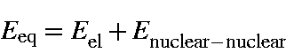
From the 0 K potential surface and using the harmonic oscillator approximation, we can calculate the vibrational
frequencies, νi,
of the normal modes of vibration. Using these, we can
calculate vibrational, rotational and translational contributions to
the thermodynamic quantities such as the partition function and heat capacity
which arise
from heating the system from 0 to T K.
Q: partition function, E: energy, S: entropy,
and C: Heat capacity at constant pressure = Cp. In ab initio
calculations, the heat capacity calculated is Cv.
The relationship between Cp and Cv (in cal.degree-1.mol-1) is:
The vibrational contribution to the internal energy arises from population
of the vibrational energy levels. The vibrational partition coefficient, Qvib,
is given by:
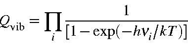
Evib, for a molecule at the temperature T as:
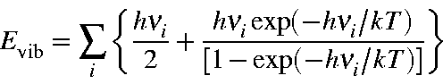
where h is Planck's constant, νi
the i-th normal vibration frequency, and k the
Boltzmann constant. For 1 mole of molecules,
Evib should be multiplied by the Avogadro number Na
= R/k. Thus:
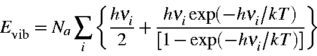
Equation 1
Note that the first term in the above equation is the zero-point vibration
energy, Ezpe. Hence, the second term is the additional
vibrational contribution due to the temperature increase from 0 K to T K.
Namely,
Evib
=
Ezpe+Evib (T)
Ezpe
=
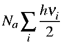
Evib(T)
=
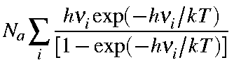
Equation 2
The value of
Evib from GAUSSIAN 82 and 86
includes
Ezpe as defined by Equation 1
and Equation 2.
Svib
=
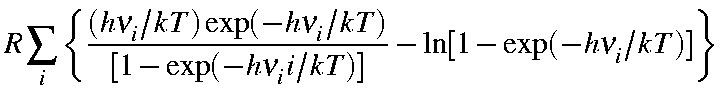
Cvib
=
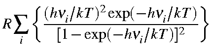
At temperature T>0 K, a molecule rotates about the x, y, and z-axes
and translates in x, y, and z-directions. By assuming the equipartition of
energy, energies for rotation and translation,
Erot and
Etr, are calculated.
Rotational terms
Σ is the symmetry number (Examples of
symmetry numbers are shown in the Table). I is moment of inertia. IA,
IB, and IC are moments of
inertia about A, B, and C axes.
It should be noted that M.O. parameters for MNDO, AM1, etc., are optimized so as to reproduce the experimental heat of formation (i.e., standard enthalpy of formation or the enthalpy change to form a mole of compound at 25oC from its elements in their standard state) as well as observed geometries (mostly at 25oC), and not to reproduce the
Eeq and equilibrium geometry at 0 K.
In this sense, ESCF (defined as Heat of formation, ΔHf), force constants, normal vibration frequencies, etc. are all related to the values at 25oC, not to 0 K. Therefore, the
E0 calculated in FORCE is not the true
E0. Its use as E0should be made at your own risk, bearing in mind the situation discussed above.
Since ESCF is standard enthalpy of formation (at 25C):
Eeq: Electronic plus nuclear energy for the
equilibrium geometry at 0 K; Ezpe: Zero-point energy; Evib:
Vibrational energy at 298.15 K; Erot: Rotational energy at 298.15 K; Etra:
Translational energy at 298.15 K.
To avoid the complication arising from the definition of ESCF, within the thermodynamics calculation the Standard Enthalpy of Formation, ΔH, is calculated by
ΔH = ESCF
+ (HT - H298).
Here, ESCF is the heat of formation (at 25oC) given in the output list, and HT and H298 are the enthalpy contributions for the increase of the temperature from 0 K to T and 298.15, respectively. In other words, the enthalpy of formation is corrected for the difference in temperature from 298.15 K to T.
There is a problem in that HT is the heat of formation at T relative to the heat of formation of the elements in their standard state at 298K. This involves mixing standard and not standard terms. There is no easy way to get the correct value for HT, but for rough work HT is useful. For more correct work, calculate ΔH for the elements in their standard state at T, and use these ΔH's to get the ΔH for the compound you're working with (or use tables from the literature).
This problem is, however, not normally important, because the most common use
of HT is for calculating the thermodynamics of reactions at
temperatures other than 298K. For all reactions, the types and number of
atoms must be the same in reactants and products, therefore the fact that the HT
are relative to the elements in their standard state at 298K is irrelevant.
Consider the simple Diels-Alder reaction:
C2H4 + C4H6 = C6H10
The heat of this reaction at 298K is H298( C6H10)
- H298(C2H4) - H298( C4H6).
At any other temperature, the heat of reaction would be:
HR =HT( C6H10)
- HT(C2H4) - HT( C4H6).
Care must, however, be taken to account for changes in volume -
if any of the reactants or products are gaseous, then appropriate corrections
must be made to HR . Complications arise only if
absolute heats of formation are needed. Thus, if the heat of formation of
benzoic acid (C7H6O2) at 398K (100C) is needed,
the H398(C7H6O2) generated by
MOPAC would be for the reaction:
Note that on the left side, the temperatures are 298K. For
H2 and O2, the heats of formation at 398K can readily be
calculated, but for graphite the calculation is more complicated. The
easiest way to generate a balanced equation would be to use tables of heats of
formation of the elements at non-standard temperatures.
Finally, as mentioned above, changes in volume must also be
taken into account: if the reaction volume changes, then RΔN(T-298)
must be added or subtracted, where R is the gas constant (~
2cals/degree/mol), and ΔN is the change in volume.
Thus for the formation of methane from graphite and hydrogen, 2 volumes of
reactant (H2 + graphite) yield 1 volume of methane, therefore
ΔN = 1.
The method of calculation for T and H298 will be given below.
In MOPAC, the variables defined below are used:
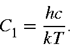
The wavenumber, , in cm-1:
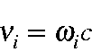
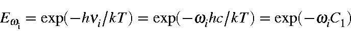
The rotational constants A, B, and C in cm-1:
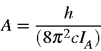
Energy and Enthalpy in cal/mol, and Entropy in cal/mol/K. Thus, the earlier Equations can be written as follows: